<!doctype html>
<html dir="rtl" lang="he">
<head>
<meta charset="utf-8">
<meta name="viewport" content="width=device-width, initial-scale=1">
<title>אב־טיפוס — ביטול ופירוט הוראות</title>
<style>
  /* The screens ARE the Figma frames, exported 1:1 at 2x. This player adds
     only what Figma's own player adds: the authored hotspots, transitions
     and timers, read from the prototype graph — nothing redrawn by hand. */
  :root{
    --blue:#0066ff;
    --ease-out:cubic-bezier(0.23,1,0.32,1);
  }
  *{box-sizing:border-box;margin:0}
  html,body{height:100%}
  body{background:#e9edf3;display:flex;align-items:center;justify-content:center;overflow:hidden;
    font-family:-apple-system,'Heebo',sans-serif;-webkit-user-select:none;user-select:none}
  #stage{position:relative;aspect-ratio:375/812;height:min(100vh,900px);max-width:100vw;
    background:#fff;overflow:hidden;box-shadow:0 10px 60px rgba(20,30,60,.18)}
  @media (min-width:460px){ #stage{border-radius:28px;height:min(94vh,860px)} }
  .screen{position:absolute;inset:0;visibility:hidden;will-change:transform,opacity}
  .screen img{width:100%;height:100%;display:block;pointer-events:none}
  .screen.on{visibility:visible}
  .hot{position:absolute;cursor:pointer;border-radius:8px}
  .hot::after{content:'';position:absolute;inset:0;border-radius:inherit;background:rgba(0,102,255,.22);
    outline:2px solid rgba(0,102,255,.55);opacity:0;transition:opacity .3s ease}
  #stage.hint .hot::after{opacity:1}
  /* the swipeable first card on the list screen — the 'cancel order'
     component's hint/swipe states, reproduced with the exported layers */
  #swipe{position:absolute;left:4.27%;top:31.28%;width:91.47%;height:25.37%;
    overflow:hidden;border-radius:16px;background:#f6f6f9;touch-action:pan-y;cursor:pointer}
  /* ltr so the strip's physical order stays [action | card] under dir=rtl */
  #swipeStrip{position:absolute;inset:0 auto 0 0;width:195.04%;height:100%;display:flex;direction:ltr;
    transform:translateX(-48.73%);will-change:transform}
  #swipeStrip.anim{transition:transform var(--sd,620ms) cubic-bezier(0.77,0,0.175,1)}
  #swipeStrip img{height:100%;display:block}
  #swipeStrip .act{width:48.73%}
  #swipeStrip .crd{width:51.27%}
  #swipe::after{content:'';position:absolute;inset:0;border-radius:inherit;pointer-events:none;
    background:rgba(0,102,255,.22);outline:2px solid rgba(0,102,255,.55);opacity:0;transition:opacity .3s ease}
  #stage.hint #swipe::after{opacity:1}
  /* ── the לחתימה screen (page 'פרוטוטייפ חתימה'): the Sign swipe card,
        the 'בחר הכל' multi-select and its sticky footer, from the file ── */
  #stage{container-type:size}
  /* the white sheet shows behind the card as it slides — in the file nothing
     fills the swipe state's backdrop but the page itself */
  #signSwipe{position:absolute;left:4.27%;top:29.31%;width:91.47%;height:25.62%;
    overflow:hidden;border-radius:16px;touch-action:pan-y;cursor:pointer;background:#fff}
  #signSwipe::before{content:'';position:absolute;inset:0;z-index:2;border-radius:inherit;pointer-events:none;
    border:1.5px solid #0066ff;opacity:0;transition:opacity .15s ease}
  #signSwipe.sel::before{opacity:1}
  #signSwipe::after{content:'';position:absolute;inset:0;z-index:3;border-radius:inherit;pointer-events:none;
    background:rgba(0,102,255,.22);outline:2px solid rgba(0,102,255,.55);opacity:0;transition:opacity .3s ease}
  #stage.hint #signSwipe::after{opacity:1}
  #signStrip{position:absolute;inset:0 auto 0 0;width:147.81%;height:100%;direction:ltr;will-change:transform}
  #signStrip.anim{transition:transform var(--sd,992ms) cubic-bezier(0.77,0,0.175,1)}
  #signStrip .act{position:absolute;left:0;top:0;width:32.35%;height:100%}
  #signStrip .crd{position:absolute;left:32.35%;top:0;width:67.65%;height:100%}
  #signStrip img{width:100%;height:100%;display:block;pointer-events:none}
  /* checkboxes: the checked state is the file's own 'Checked Fill' export,
     shown over the base screen's unchecked box */
  .sgCb{position:absolute;cursor:pointer;z-index:4}
  /* #stage prefix outweighs the '#signStrip img' sizing for the in-card box */
  #stage .sgCb img{position:absolute;left:20%;top:20%;width:60%;height:60%;opacity:0;transition:opacity .15s ease;pointer-events:none}
  #stage .sgCb.on img{opacity:1}
  .sgBorder{position:absolute;border:1.5px solid #0066ff;border-radius:16px;opacity:0;pointer-events:none;transition:opacity .15s ease}
  .sgBorder.on{opacity:1}
  /* the multi-select footer: sticky, with the file's shadow and button */
  #signFooter{position:absolute;left:0;right:0;bottom:0;height:14.04%;z-index:5;background:#fff;
    box-shadow:0 -15px 20px rgba(186,202,221,.30);transform:translateY(105%);
    transition:transform 300ms var(--ease-out);pointer-events:none}
  #signFooter.on{transform:translateY(0);pointer-events:auto}
  /* button and toast are Figma exports, not redrawn text — the counter's
     eight states and the toast were rendered in the file's own type
     (SimplerPro_Leumi) and exported like every screen */
  #signBtn{position:absolute;left:6.4%;right:6.4%;top:14%;height:42.2%;border:0;padding:0;
    background:none;cursor:pointer}
  #signBtn img{width:100%;height:100%;display:block}
  #signBtn:active{transform:scale(.985)}
  #signHome{position:absolute;left:32.13%;width:35.73%;bottom:7%;height:4.4%;border-radius:999px;background:#1d1d20}
  /* ── the תמונת מצב screen: a real scrolling snapshot whose balance cards
        expand in place (file 'תמונת מצב', frames 30015:9379/9403/9699) ── */
  #snapScroll{position:absolute;inset:0 0 9.11% 0;overflow-y:auto;overscroll-behavior:contain;z-index:1;
    background:#f9fafb}
  /* height:auto everywhere — the generic .screen img rule stretches to 100% */
  #snapScroll img{width:100%;height:auto;display:block;pointer-events:none}
  .snapCard{position:relative;overflow:hidden;cursor:pointer;transition:height 480ms var(--ease-drawer)}
  .snapCard img{position:absolute;top:0;left:0;transition:opacity 240ms ease}
  .snapCard .openImg{opacity:0}
  .snapCard.open .openImg{opacity:1}
  .snapCard.open .closedImg{opacity:0}
  /* the header floats: transparent at rest, white with the authored shadow
     once the page has scrolled under it */
  #snapHead{position:absolute;top:0;left:0;width:100%;height:auto;z-index:3;pointer-events:none;
    box-shadow:0 4px 20px rgba(186,202,221,.4);opacity:0;transition:opacity 200ms ease}
  #snapHead.on{opacity:1}
  #snapNav{position:absolute;left:0;bottom:0;width:100%;height:auto;z-index:3}
  #scr-snap .hot{z-index:4}
  /* the ריכוז יתרות bars — the design system's Account-Snapshot_graphs
     component — grow bottom-up from their shared baseline when the open
     chart scrolls into view; each bar is its own exported layer over the
     bar-less base (amounts and labels live below the bars, in the base) */
  #snapSum .bar{position:absolute;left:14.93%;top:24.39%;width:70.4%;height:auto;
    opacity:0;clip-path:inset(100% 0 0 0);pointer-events:none}
  #snapSum.open .bar{opacity:1}
  #snapSum.grown .bar{clip-path:inset(0 0 0 0);transition:clip-path 800ms var(--ease-out)}
  #snapSum.grown .barCredit{transition-delay:140ms}
  @media (prefers-reduced-motion: reduce){
    .snapCard{transition:none}
    #snapSum .bar{clip-path:none}
    #snapSum.grown .bar{transition:none}
  }
  /* the select-all toast (component 1:19776), exported with its authored
     amber shadow — the img extends past the 343×52 slot to carry it */
  #signToast{position:absolute;left:4.27%;bottom:16.5%;width:91.47%;height:6.4%;z-index:6;pointer-events:none;
    opacity:0;transform:translateY(8px);transition:opacity 250ms var(--ease-out),transform 250ms var(--ease-out)}
  #signToast.on{opacity:1;transform:translateY(0)}
  #signToast img{position:absolute;left:-4.66%;top:-23.08%;width:109.91%;height:165.4%;max-width:none}
</style>
</head>
<body>
<div id="stage" aria-label="אב־טיפוס אינטראקטיבי. לחיצה על אזור ריק מציגה את האזורים הפעילים."></div>

<script>
/* The flow, verbatim from the Figma prototype graph (frame ids in comments).
   Rects are in the 375x812 frame space; transitions carry the authored
   direction and duration. */
const SCREENS = {
  list:    { img:'scr-list.png',    hots:[ {r:[196,740,84,70], to:'sign', t:'dissolve', d:250},
                                           {r:[272,740,72,70], to:'snap', t:'dissolve', d:250} ] }, // 2037:18734 — nav bar tabs
           // The לחתימה screen (file 'חתימות', frame 8293:85134): its Sign
           // swipe card and the 'בחר הכל' multi-select are wired below —
           // the פעולות tab returns to the instructions list.
  sign:    { img:'scr-sign.png',    hots:[ {r:[118,740,76,70], to:'list', t:'dissolve', d:250},
                                           {r:[272,740,72,70], to:'snap', t:'dissolve', d:250} ] }, // 8293:85134
           // The תמונת מצב snapshot (file 'תמונת מצב'): built from slices
           // below as a scrolling page — no full-screen image of its own.
  snap:    { img:null,              hots:[ {r:[118,740,76,70], to:'list', t:'dissolve', d:250},
                                           {r:[196,740,84,70], to:'sign', t:'dissolve', d:250} ] }, // 30015:9379
           // The first card is not a flat hotspot: it is the 'cancel order'
           // component — tap navigates, drag opens the swipe state, and the
           // authored hint plays on arrival. The file's 3s auto-advance is
           // deliberately NOT implemented: the owner wants navigation to
           // happen only on a user trigger (2026-09-07).
  cancel:  { img:'scr-cancel.png',  hots:[ {r:[0,60,60,24],    to:'list',    t:'moveout-right', d:383},
                                           {r:[16,358,343,56], to:'payees',  t:'movein-top',    d:511},
                                           {r:[24,714,327,48], to:'summary', t:'movein-left',   d:383} ] }, // 2037:19513
  summary: { img:'scr-summary.png', hots:[ {r:[24,714,327,48], to:'toastA',  t:'movein-left',   d:383} ] }, // 2037:19601
  payees:  { img:'scr-payees.png',  hots:[ {r:[0,0,375,252],   to:'cancel',  t:'slideout-bottom', d:640} ] }, // 2037:19316
  toastA:  { img:'scr-toast-a.png', hots:[], auto:{ after:1200, to:'toastB', t:'dissolve', d:1022 } },      // 2037:19882
  toastB:  { img:'scr-toast-b.png', hots:[ {r:[0,0,375,812], to:'list', t:'dissolve', d:400} ] },           // 2037:20063
};
const START = 'list';
const stage = document.getElementById('stage');
const reduce = matchMedia('(prefers-reduced-motion: reduce)').matches;

for (const [key, s] of Object.entries(SCREENS)) {
  const el = document.createElement('div');
  el.className = 'screen'; el.id = 'scr-' + key;
  el.innerHTML = (s.img ? `` : '') + s.hots.map((h, j) =>
    `<div class="hot" data-k="${key}" data-j="${j}" style="left:${(h.r[0]/375*100).toFixed(2)}%;top:${(h.r[1]/812*100).toFixed(2)}%;width:${(h.r[2]/375*100).toFixed(2)}%;height:${(h.r[3]/812*100).toFixed(2)}%"></div>`
  ).join('');
  stage.appendChild(el);
}

let current = null, timer = null, busy = false;

function animate(el, frames, dur){
  return new Promise(res => {
    if (reduce) return res();
    const a = el.animate(frames, { duration: dur, easing: 'cubic-bezier(0.23,1,0.32,1)', fill: 'both' });
    a.onfinish = () => { a.cancel(); res(); };
  });
}

async function go(key, t = 'dissolve', dur = 300){
  if (busy || key === current) return;
  busy = true;
  clearTimeout(timer);
  const from = current ? document.getElementById('scr-' + current) : null;
  const to = document.getElementById('scr-' + key);
  to.classList.add('on');

  if (from){
    if (t === 'movein-left'){        to.style.zIndex = 2; await animate(to, [{transform:'translateX(100%)'},{transform:'translateX(0)'}], dur); }
    else if (t === 'movein-top'){    to.style.zIndex = 2; await animate(to, [{transform:'translateY(100%)'},{transform:'translateY(0)'}], dur); }
    else if (t === 'moveout-right'){ from.style.zIndex = 2; to.style.zIndex = 1; await animate(from, [{transform:'translateX(0)'},{transform:'translateX(100%)'}], dur); }
    else if (t === 'slideout-bottom'){ from.style.zIndex = 2; to.style.zIndex = 1; await animate(from, [{transform:'translateY(0)'},{transform:'translateY(100%)'}], dur); }
    else { to.style.zIndex = 2; await animate(to, [{opacity:0},{opacity:1}], dur); }
    from.classList.remove('on'); from.style.zIndex = '';
  }
  to.style.zIndex = '';
  current = key; busy = false;
  const auto = SCREENS[key].auto;
  if (auto) timer = setTimeout(() => go(auto.to, auto.t, auto.d), auto.after);
}

/* Directions are Figma's, taken literally so the player matches the authored
   prototype exactly: MOVE_IN LEFT travels leftward (enters from the right
   edge), MOVE_OUT RIGHT exits rightward — back leaves the way forward came. */

stage.addEventListener('click', e => {
  // the swipe components, checkboxes and footer handle their own pointer story
  if (e.target.closest('#swipe, #signSwipe, .sgCb, #signFooter')) return;
  const hot = e.target.closest('.hot');
  if (hot){
    const h = SCREENS[hot.dataset.k].hots[hot.dataset.j];
    go(h.to, h.t, h.d);
    return;
  }
  // Figma-player behavior: a click on a dead area flashes the live areas.
  stage.classList.add('hint');
  setTimeout(() => stage.classList.remove('hint'), 650);
});
/* ── the 'cancel order' swipe component (2013:31670) ─────────────────────
   Geometry from the variants: default = card at 0; hint = card +82 with the
   action strip revealed; swipe = card +326, strip fully open. The strip and
   card travel as one unit — that is what the authored SMART_ANIMATE morphs.
   Timings from the file: to hint 620ms, hint back 1022ms, drag settle 744ms. */
const STRIP = 669, ACT = 326, HINT = 82, TAP_SLOP = 8;
const restPct = -(ACT / STRIP) * 100, hintPct = -((ACT - HINT) / STRIP) * 100, openPct = 0;
const listEl = document.getElementById('scr-list');
listEl.insertAdjacentHTML('beforeend',
  `<div id="swipe"><div id="swipeStrip">
     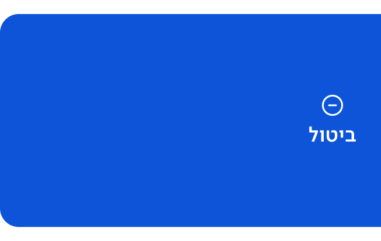
     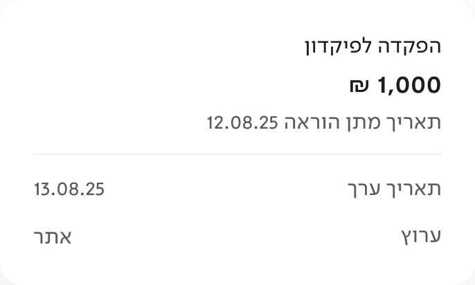
   </div></div>`);
const swipe = document.getElementById('swipe');
const strip = document.getElementById('swipeStrip');
let open = false, hintTimer = null;

const setX = (pct, dur) => {
  strip.classList.toggle('anim', dur != null && !reduce);
  if (dur != null) strip.style.setProperty('--sd', dur + 'ms');
  strip.style.transform = `translateX(${pct}%)`;
};

function playHint(){
  clearTimeout(hintTimer);
  if (reduce) return;
  setX(hintPct, 620);                        // AFTER_TIMEOUT → hint, SMART_ANIMATE 620ms
  hintTimer = setTimeout(() => setX(restPct, 1022), 800); // hint → default, 1022ms
}

let px0 = null, dragged = false, startPct = restPct;
swipe.addEventListener('pointerdown', e => {
  clearTimeout(hintTimer); clearTimeout(timer); // a touch owns the card: stop hint + auto-advance
  px0 = e.clientX; dragged = false; startPct = open ? openPct : restPct;
  strip.classList.remove('anim');
  swipe.setPointerCapture(e.pointerId);
});
swipe.addEventListener('pointermove', e => {
  if (px0 === null) return;
  const dx = e.clientX - px0;
  if (Math.abs(dx) > TAP_SLOP) dragged = true;
  const pctPerPx = 100 / (swipe.offsetWidth * (STRIP / 343));
  setX(Math.min(openPct, Math.max(restPct, startPct + dx * pctPerPx)), null);
});
swipe.addEventListener('pointerup', e => {
  if (px0 === null) return;
  const dx = e.clientX - px0; px0 = null;
  if (!dragged){
    if (!open) return go('cancel', 'movein-left', 400);     // authored tap → ביטול הוראה
    // open card: tapping the revealed ביטול action confirms; the card closes
    if (e.target.closest('.act')) return go('cancel', 'movein-left', 400);
    open = false; setX(restPct, 744);
    return;
  }
  open = dx > swipe.offsetWidth * 0.3;                      // ON_DRAG → swipe state
  setX(open ? openPct : restPct, 744);                      // settle, SMART_ANIMATE 744ms
});

/* ── the לחתימה screen: the Sign swipe card + 'בחר הכל' (file 8293:41275) ──
   Strip geometry from the Sign variants: action strip 164 (חתימה + סירוב),
   card 343, so the travel space is 507. The authored hint opens to 149 after
   0.5s (SMART_ANIMATE 992ms QUICK) and settles back (1022ms GENTLE).
   Select-all follows the 'סימון בחר הכל' spec (page 'לחתימה', 1:19741):
   checking it marks every card, and the sticky multi-select footer rises with
   the חתימה button counting selected out of the 8 pending instructions. */
const S_STRIP = 507, S_ACT = 164, S_HINT = 149;
const sRest = -(S_ACT/S_STRIP)*100, sHint = -((S_ACT-S_HINT)/S_STRIP)*100, sOpen = 0;
const SIGN_TOTAL = 8, SIGN_OFFSCREEN = 5; // 3 cards on screen, 5 below the fold
const signEl = document.getElementById('scr-sign');
signEl.insertAdjacentHTML('beforeend', `
  <div id="signSwipe"><div id="signStrip">
    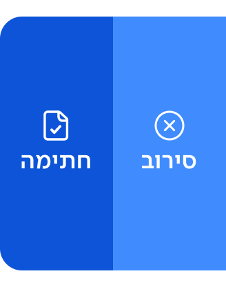
    <div class="crd">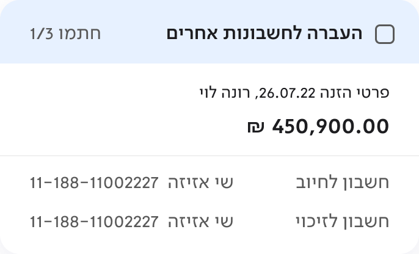
      <div class="sgCb" data-c="c1" style="left:86%;top:3.85%;width:11.66%;height:19.23%"></div>
    </div>
  </div></div>
  <div class="sgBorder" data-b="c2" style="left:4.27%;top:56.4%;width:91.47%;height:25.62%"></div>
  <div class="sgBorder" data-b="c3" style="left:4.27%;top:84.0%;width:91.47%;height:25.62%"></div>
  <div class="sgCb" data-c="all" style="left:87.2%;top:23.4%;width:10.67%;height:4.93%"></div>
  <div class="sgCb" data-c="c2" style="left:82.93%;top:57.39%;width:10.67%;height:4.93%"></div>
  <div class="sgCb" data-c="c3" style="left:82.93%;top:84.98%;width:10.67%;height:4.93%"></div>
  <div id="signToast" role="status" aria-label="נבחרו 8 הוראות">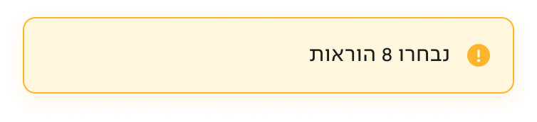</div>
  <div id="signFooter"><button id="signBtn" type="button" aria-label="חתימה (8/8)"></button><span id="signHome"></span></div>`);
const signSwipe = document.getElementById('signSwipe');
const signStrip = document.getElementById('signStrip');
const signFooter = document.getElementById('signFooter');
const signBtn = document.getElementById('signBtn');
let sOpenState = false, sHintTimer = null;

const setSX = (pct, dur) => {
  signStrip.classList.toggle('anim', dur != null && !reduce);
  if (dur != null) signStrip.style.setProperty('--sd', dur + 'ms');
  signStrip.style.transform = `translateX(${pct}%)`;
};
function playSignHint(){
  clearTimeout(sHintTimer);
  if (reduce) return;
  setSX(sHint, 992);                                   // AFTER_TIMEOUT 0.5s → hint, SMART_ANIMATE 992ms
  sHintTimer = setTimeout(() => setSX(sRest, 1022), 1050); // hint → default, 1022ms
}
setSX(sRest, null); // the card starts closed over the strip

/* select-all state: 'בחר הכל' selects the maximum of the whole list, so the
   counter jumps to 8/8; unchecking a visible card releases it one by one. */
const signSel = { c1:false, c2:false, c3:false };
let signHidden = 0;
const signCount = () => signHidden + Object.values(signSel).filter(Boolean).length;
function signSync(){
  const n = signCount();
  for (const k of ['c1','c2','c3'])
    signEl.querySelector(`.sgCb[data-c="${k}"]`).classList.toggle('on', signSel[k]);
  signEl.querySelector('.sgCb[data-c="all"]').classList.toggle('on', n === SIGN_TOTAL);
  signEl.querySelector('.sgBorder[data-b="c2"]').classList.toggle('on', signSel.c2);
  signEl.querySelector('.sgBorder[data-b="c3"]').classList.toggle('on', signSel.c3);
  signSwipe.classList.toggle('sel', signSel.c1);
  signFooter.classList.toggle('on', n > 0);
  if (n > 0){
    signBtn.querySelector('img').src = `sign-btn-${n}.png`;
    signBtn.setAttribute('aria-label', `חתימה (${n}/${SIGN_TOTAL})`);
  }
}
const signToast = document.getElementById('signToast');
let signToastTimer = null;
function showSignToast(){
  clearTimeout(signToastTimer);
  signToast.classList.add('on');
  signToastTimer = setTimeout(() => signToast.classList.remove('on'), 3000);
}
signEl.querySelectorAll('.sgCb').forEach(cb => {
  cb.addEventListener('pointerdown', e => e.stopPropagation());
  cb.addEventListener('click', e => {
    e.stopPropagation();
    const k = cb.dataset.c;
    if (k === 'all'){
      const on = signCount() !== SIGN_TOTAL;
      signSel.c1 = signSel.c2 = signSel.c3 = on;
      signHidden = on ? SIGN_OFFSCREEN : 0;
      if (on) showSignToast();
    } else {
      signSel[k] = !signSel[k];
    }
    signSync();
  });
});

/* the Sign card's swipe: drag opens the חתימה/סירוב strip, tap closes it */
let sPx0 = null, sDragged = false, sStartPct = sRest;
signSwipe.addEventListener('pointerdown', e => {
  if (e.target.closest('.sgCb')) return;
  clearTimeout(sHintTimer); clearTimeout(timer);
  sPx0 = e.clientX; sDragged = false; sStartPct = sOpenState ? sOpen : sRest;
  signStrip.classList.remove('anim');
  signSwipe.setPointerCapture(e.pointerId);
});
signSwipe.addEventListener('pointermove', e => {
  if (sPx0 === null) return;
  const dx = e.clientX - sPx0;
  if (Math.abs(dx) > TAP_SLOP) sDragged = true;
  const pctPerPx = 100 / (signSwipe.offsetWidth * (S_STRIP / 343));
  setSX(Math.min(sOpen, Math.max(sRest, sStartPct + dx * pctPerPx)), null);
});
signSwipe.addEventListener('pointerup', e => {
  if (sPx0 === null) return;
  const dx = e.clientX - sPx0; sPx0 = null;
  if (!sDragged){
    if (sOpenState){ sOpenState = false; setSX(sRest, 744); } // any tap settles the open card
    return;
  }
  sOpenState = dx > signSwipe.offsetWidth * 0.3;
  setSX(sOpenState ? sOpen : sRest, 744);
});

/* ── the תמונת מצב screen: scroll + expanding balance cards ──────────────
   The page is the file's full frame, sliced so the three authored expandables
   swap state in place: מטבעות חוץ (82 ↔ 378), כרטיסי אשראי (82 ↔ 564, the
   card stack), and ריכוז יתרות (60 ↔ 316) — the design system's
   Account-Snapshot_graphs card (from 'סכומים גדולים'): bars on a shared
   baseline, amounts and labels beneath them, and the מידע-נוסף link. The
   header is the component's two states: transparent at rest, white with its
   shadow once content scrolls under. */
const snapEl = document.getElementById('scr-snap');
snapEl.insertAdjacentHTML('beforeend', `
  <div id="snapScroll">
    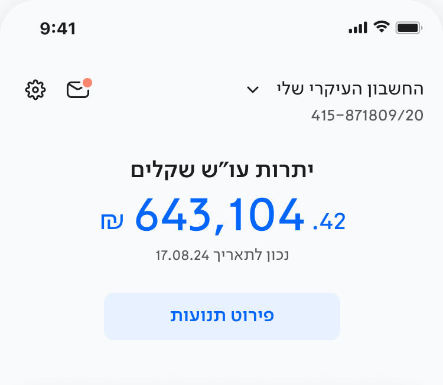
    <div class="snapCard" id="snapFx" role="button" aria-expanded="false" aria-label="מטבעות חוץ">
      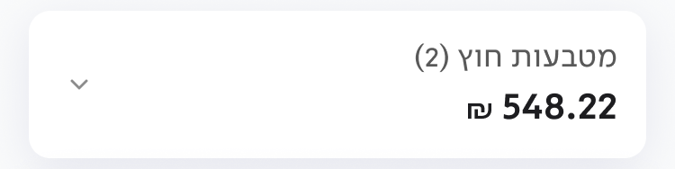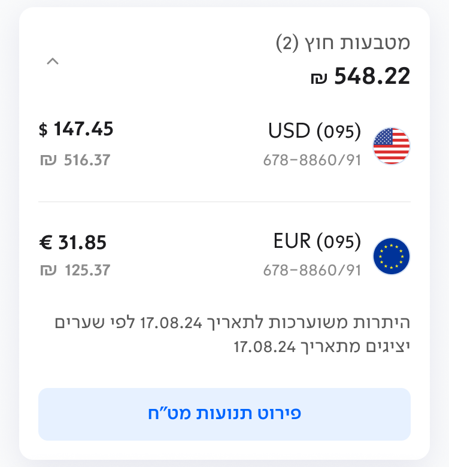</div>
    <div class="snapCard" id="snapCc" role="button" aria-expanded="false" aria-label="כרטיסי אשראי">
      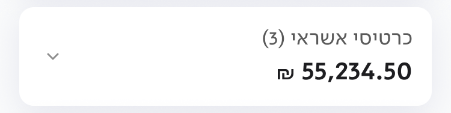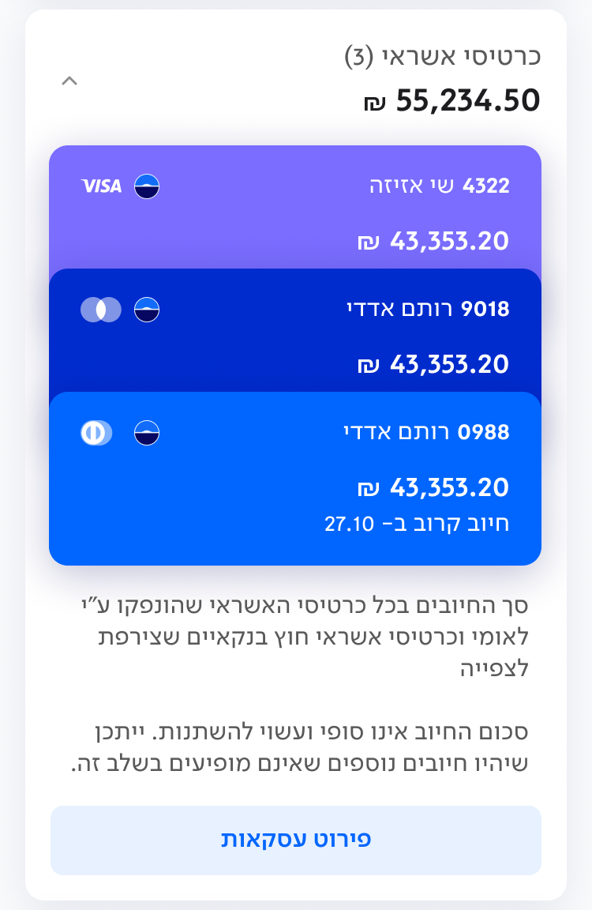</div>
    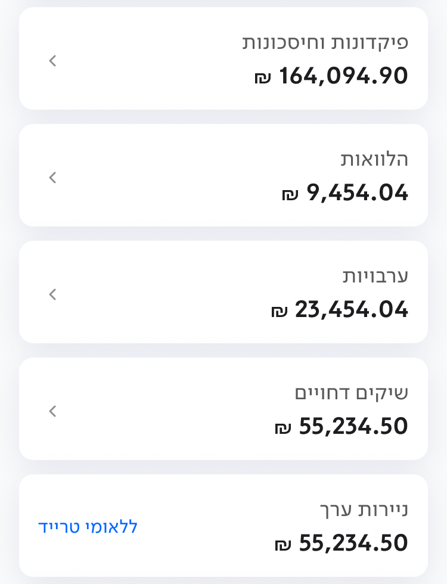
    <div class="snapCard" id="snapSum" role="button" aria-expanded="false" aria-label="ריכוז יתרות">
      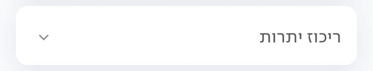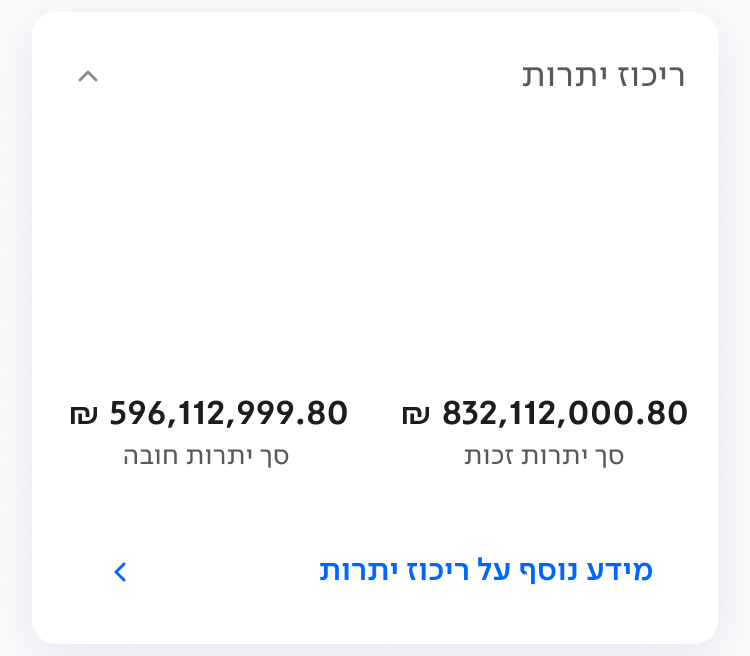
      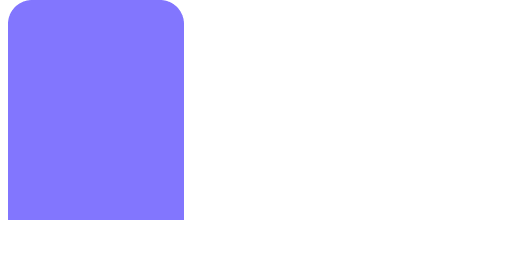
      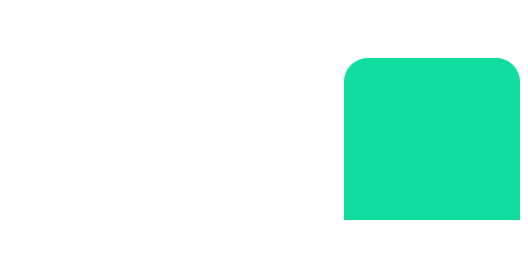</div>
    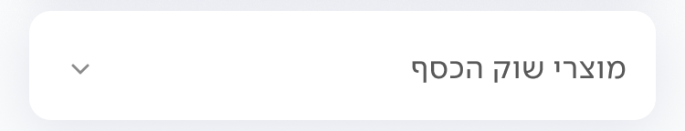
    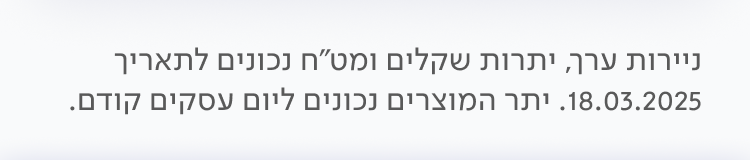
  </div>
  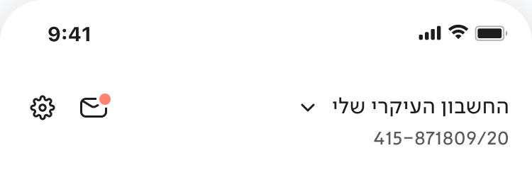
  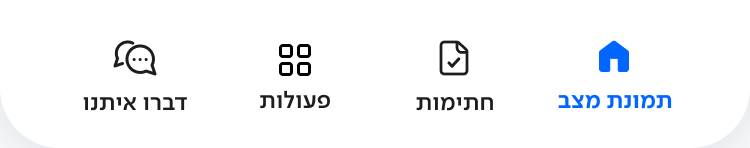`);
const snapScroll = document.getElementById('snapScroll');
const snapHead = document.getElementById('snapHead');
// slice heights @2x over a 750-wide image
const SNAP_H = { snapFx:[188,780], snapCc:[188,1152], snapSum:[144,656] };
function snapSize(){
  const w = snapScroll.clientWidth;
  for (const id of Object.keys(SNAP_H)){
    const el = document.getElementById(id);
    el.style.height = (SNAP_H[id][el.classList.contains('open') ? 1 : 0] / 750 * w) + 'px';
  }
}
new ResizeObserver(snapSize).observe(snapScroll);
snapSize();
const snapSum = document.getElementById('snapSum');
/* The bars enter by growing from the baseline (a bottom-up reveal, so the
   type never distorts). Removing .grown snaps them shut instantly; adding it
   back plays the growth. */
function growSumBars(){
  snapSum.classList.remove('grown');
  void snapSum.offsetWidth;
  requestAnimationFrame(() => snapSum.classList.add('grown'));
}
for (const id of Object.keys(SNAP_H)){
  const el = document.getElementById(id);
  el.addEventListener('click', e => {
    e.stopPropagation();
    // only the card's own header row collapses an open card — the body holds
    // content (rows, the card stack, the chart) that should not swallow taps
    const zone = SNAP_H[id][0] / 750 * el.clientWidth;
    if (el.classList.contains('open') && e.offsetY > zone) return;
    const opening = !el.classList.contains('open');
    el.classList.toggle('open');
    el.setAttribute('aria-expanded', opening);
    snapSize();
    if (el === snapSum){
      if (opening) setTimeout(growSumBars, 180); // once the height is underway
      else snapSum.classList.remove('grown');
    }
  });
}
// scrolling away and back replays the growth — the reveal belongs to arrival
new IntersectionObserver((entries) => {
  for (const en of entries){
    if (!snapSum.classList.contains('open')) continue;
    if (en.intersectionRatio >= 0.6 && !snapSum.classList.contains('grown')) growSumBars();
    else if (en.intersectionRatio <= 0.05 && snapSum.classList.contains('grown')) snapSum.classList.remove('grown');
  }
}, { root: snapScroll, threshold: [0.05, 0.6] }).observe(snapSum);
snapScroll.addEventListener('scroll', () => {
  snapHead.classList.toggle('on', snapScroll.scrollTop > 8);
});

// arrival hints are part of entering a screen — replay them on every entry
const origGo = go;
go = async function(key, t, d){
  await origGo(key, t, d);
  if (key === 'list'){ open = false; setX(restPct, null); setTimeout(playHint, 450); }
  if (key === 'sign'){ sOpenState = false; setSX(sRest, null); sHintTimer = setTimeout(playSignHint, 500); }
};
let loaded = 0;
const all = [...Object.values(SCREENS).map(s=>s.img).filter(Boolean), 'swipe-card.png', 'swipe-action.png',
             'sign-card.png', 'sign-actions.png', 'cb-checked.png', 'sign-toast.png',
             ...Array.from({length: 8}, (_, i) => `sign-btn-${i + 1}.png`),
             'snap-hero.png', 'snap-fx-closed.png', 'snap-fx-open.png', 'snap-cc-closed.png',
             'snap-cc-open.png', 'snap-rows.png', 'snap-mid.png', 'snap-sum-closed.png',
             'snap-sum-open.png', 'snap-bar-debit.png', 'snap-bar-credit.png',
             'snap-tail.png', 'snap-header.png', 'snap-nav.png'];
all.forEach(src => { const im = new Image(); im.onload = im.onerror = () => { if (++loaded === all.length) go(START); }; im.src = src; });
</script>
</body>
</html>
